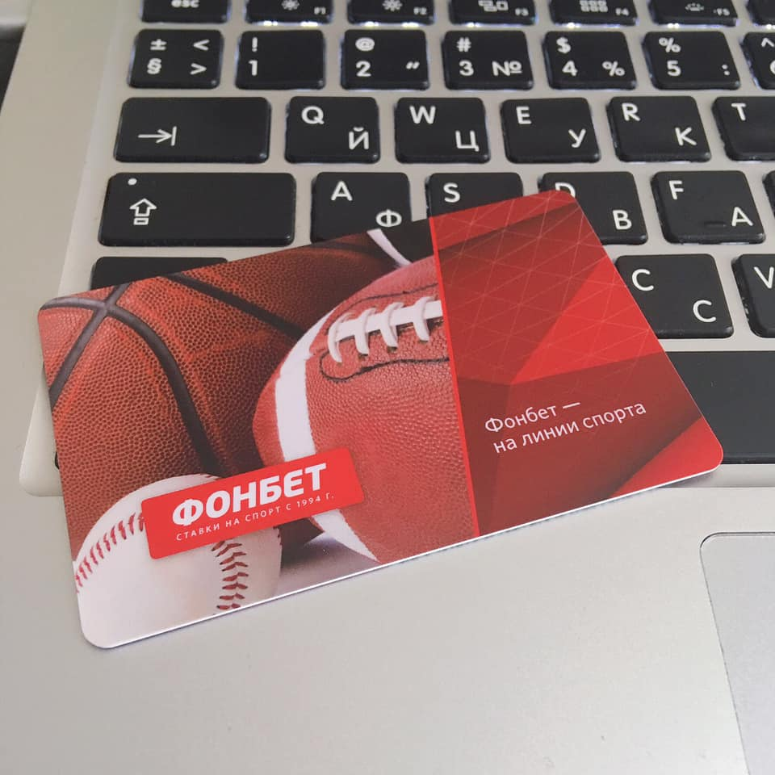

Около 40 лет я относился к любителям посмотреть спорт по телевизору как к чудакам. Мне казалось, логичней и полезней смотреть просто в окно.
Я даже иногда чувствовал себя ущербным, примерно так же, как когда мне рассказывают про «борды в Геше» (где я ни разу не был).
Но на прошлой неделе всё резко поменялось. Я начал делать спортивные ставки и интерес к спортивным играм вырос до небес, буквально я задышал. Вчера до 2 часов ночи смотрел хоккей СКА-Локомотив, переживал за денежку, не понимал КАК МОЖНО ТАК ИГРАТЬ?! А третьего дня болел за Логинова, который чуть-чуть бы и принёс мне +102% ставки.
В общем, новый чудесный мир, здравствуй.
Сам тотализатор, кстати, отрасль весьма занятная.
Вот это я называю азарт.
